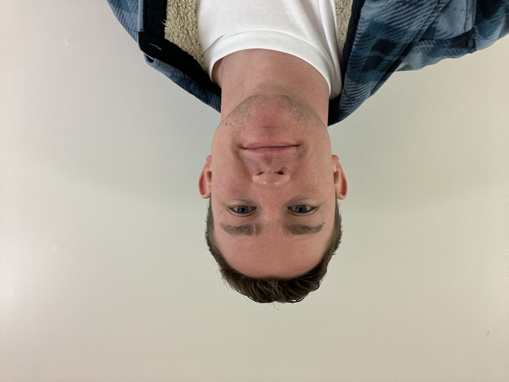

Fun Places to Visit
- Washington D.C.
- Maryland Heights Overlook
- Baltimore Aquarium
- Ocean City
Sports Teams
- Baltimore Orioles
- Baltimore Ravens
- Maryland Terrapins
- Washington Capitals
- Washington Commanders
- Washington Nationals
- Washington Wizards
Famous Marylanders
- Frederick Douglass
- Harriet Tubman
- Edgar Allan Poe
- Francis Scott Key
- Babe Ruth
- Cal Ripken Jr.
- Michael Phelps
- Kevin Durant
Occupational Growth

Not so Famous Marylander: Andrew Frizzell
Resume
EDUCATION
Brigham Young University – Marriott School of Business [Provo, UT]
Bachelor of Science in Finance, Minor in Spanish [Dec 2025]
- GPA 3.42 / 4.00
- BYU Finance Society
- BYU Private Banking & Wealth Management Association
EXPERIENCE
Frederick Health Hospital (hospital that serves a population of nearly 300,000 people) [Frederick,MD]
Patient Flow Coordinator [Jun 2021 - Dec 2021]
- Coordinated a team of several transporters to manage the time-sensitive movement of patients throughout the hospital for tests/operations/etc.
- Used effective social skills to maintain communication between transport team and nurses/techs/staff
- Demonstrated flexibility and problem-solving in high-intensity and emergency conditions
- Utilized several software systems to manage patient flow for the entire hospital, log transport data records, and schedule shifts for my team
Silverland Enterprises / DC Generals (home improvement and insurance advocacy) [Provo, UT / Frederick, MD]
Account Manager [Aug 2018 – Jun 2021]
- Managed accounts and assisted in the acquisition of over 2400 clients in the span of 3 years, processing around 2100 claims, generating $11.2+ million in revenue
Frederick Health Hospital (hospital that serves a population of nearly 300,000 people) [Frederick,MD]
Patient Transporter [Sep 2018 – Jun 2019]
- Transported patients around the hospital while being responsible for their health and safety throughout the process
- Displayed calm character and confidence while moving high-risk, contagious, ICU, and hospice patients
- Exercised social skills and awareness to communicate with hospital staff, patients, and family members during stressful and highly emotional situations
Frizzell Lawn Care (aerating and curating lawns) [Frederick,MD]
Co-owner [Mar 2015 – Sep 2020]
- Owned and managed the business and was responsible for marketing and finances
- Acquired more than 150+ clients and managed customer relations
Frizzell Window Washing (exterior and interior window cleaning) [Frederick,MD]
Co-owner [May 2020 – Jan 2022]
- Owned and managed the business and was responsible for marketing and finances
- Specialized in cleaning various types of windows with precision and attention to detail
SERVICE
The Church of Jesus Christ of Latter-day Saints [San Pedro Sula, Honduras]
Full-time Volunteer Representative [Jan 2022 – Dec 2023]
- Taught positive life values to the community and helped the people live more rewarding lives
- Adapted to a foreign culture, learned the Spanish language, built houses, completed various service projects, and developed time management skills by setting daily and weekly goals and plans
AWARDS, SKILLS, AND INTERESTS
- Eagle Scout, Boy Scouts of America
- National Football Foundation and College Hall of Fame Scholar-Athlete Award for The Greater Baltimore Chapter
- Proficient in SQL, flow charting, VBA, Tableau, and Microsoft Programs including PowerPoint, Word, and Excel
- Fluent in Spanish: reading, writing, and speaking
- Interests: Basketball, football, snowboarding, bowling, piano, escape rooms, and entrepreneurship